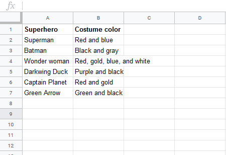

How to use vlookup formulas in Excel and Sheets
A vlookup is, as the name suggests, for looking stuff up based on a value you already have. Explaining this in the abstract is almost useless, so let's get right to an example.
For this example, we're going to pretend that I'm a big nerd (ahem, right..."pretend"), and I want to be able to look up the color of any superhero's costume. I've started keeping a list of superheroes and their costume colors:
This is not a very big list yet, but someday I plan to include every single superhero, and I don't want to have to do any scrolling to look up a costume color. I just want to type in the superhero's name have my spreadsheet spit the colors back out. I can use a vlookup to do this. To write one, I need:
These items make up 3 of the 4 inputs that a vlookup formula requires. We'll deal with the fourth when we get there. Let's get to formuarizing:
Vlookups begin with =VLOOKUP(, and the first argument is the information you already have. In my example, I'll already have the superhero's name.
That's my search value. (Excel calls it the "lookup value," and Sheets calls it a "search key.") Now, you can type out your term (in quotes), e.g. "Superman",
but in practice, you'll almost always be referring to another cell. So I'll set up a "superhero picker" in G4, and I'll
plan to display the answer in G5. This way, my vlookup can always start with G4, no matter which superhero we're looking up:
My formula begins: =VLOOKUP(G4,.
The second argument is the range of columns I'm searching. Here, this is just columns A and B. So now, we have =VLOOKUP(G4,A:B,)
The third argument is how many columns to the right your search result is in. Sheets calls this "index," and Excel calls it "col_index_num." In my example, the
costume color is one column to the right, so I can choose 1 for the index: =VLOOKUP(G4,A:B,1,
Note that by default, both Excel and Sheets assume that you're searching to the right of the column where your search value lives. You can workaround this, but we're not going to cover that here. If possible, try to set your data up so that the index column is as far to the left as possible.
There's one final (optional) argument, which Sheets calls "is_sorted" and Excel calls "range_lookup." It can be set to TRUE or FALSE.
TRUE means "find the closest number," and FALSE means "find an exact match." I'm going to be looking up a word or phrase,
so I definitely want FALSE—an exact match. Note that if you leave this argument out, both Excel and Sheets treat it as TRUE.
Anyway, now we have:=VLOOKUP(G4,A:B,FALSE). We've now finished our superhero costume color tool. Whatever name we select
in G4 will result in the correct costume color(s) in G5.
Often, you'll be populating a column of data using vlookups, and you'll have way more than 2 columns of data to search through. For example, here's some Zillow rent price data:

This data set lists the rent prices for more than 13,100 cities by month from November 2010 to January 2017. Now, let's say I have a list of cities I am considering moving to, and I want to get a sense of what I might expect to pay for rent. Rather than scrolling around this list looking at cities, or even control-Fing, I'll set up a new tab with my preferences and use vlookups to populate them. That way, I'll be able to compare my preferences without jumping around. Also, once I set this up, I'll also be able to add to my list of preferences later and get very quick answers.
First, I'll do a little data preparation. With 13,100 U.S. cities, some cities will share name.(For example, there are 5 "Bostons.") I need to a unique search key so that I know I'm looking up the right city. To do this, I'll:
=CONCAT(a2&b2) (for concatenate, which mashes things together)You can see my results in column C. I'm gambling that they'll solve the problem of nonunique city names. (Note: The city code actually isunique, and in an ideal world, I'd set things up so that I could use that instead.)

Next, for easier analysis, I'm going to add an average price column in column G. There are lots of other ways we could
evaluate housing cost, including some that take into account the change over time, but let's start simple. I add the
formula =AVERAGE(I3:CE3), which covers the row, Nov. 2010 to Jan. 2017. Again, double clicking the fill handle copies
this all the way down column G.

Now, we're ready to pull the data out of this table. In a separate worksheet, I set up a column with my city preferences.
I also add another column for state so that I can use =CONCAT() again
in column C. Now, I can link the column Cs in both worksheets using a vlookup.

Here's how the formula works this time:
=VLOOKUP(C2,=vlookup(C2,rent_data!$C:$H. (The dollar signs mean these are absolute references,
or that they won't change when I copy the formula to other cells. I don't strictly need them here, but it's good practice.)=VLOOKUP(C2,rent_data!$C:$H,6 =VLOOKUP(C2,rent_data!$C:$H,6,FALSE) Lastly, I drag the fill handle down to copy this formula for my other preferences.

ONow that I've set this up, if I want to look up additional places to live, all I have to do is type the new city in A7, its state in B7, and drag down the fill handles from columns C & D (at the same time, even!). C & D.
What we've created here is the beginning of a report. I can imagine adding other data sets to other workbooks—maybe one on employment data and one on restaurants—and using vlookups to bring relevant data from those sets to my summary report. Vlookups are immensely useful for this kind of thing.
One final note: There is also an "hlookup," which you may occasionally want to use. It works the same as a vlookup, except that where a vlookup looks across columns, an hlookup looks across rows.
{% endblock %}